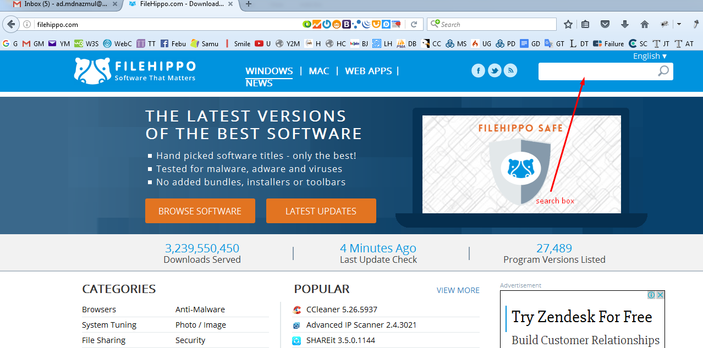

জাভা ইন্সটল করা
জাভা ইন্সটল করা বলতে আসলে আমরা JDK(Java Development Kit) ইন্সটল করবো। জাভাতে প্রোগ্রামিং করার জন্য আমাদের আগে JDK ইন্সটল করতে হবে।
প্রথমে একটু দেখে এসো তোমার পিসিতে কত বিট এর উইন্ডোজ ইন্সটল করা আছে।

এটি ৩২ বিট এর উইন্ডোজ। এখানে ৬৪ বিট ও লেখা থাকতে পারে। এখানে যত বিট লেখা থাকবে তোমাকে তত বিটের JDK ডাউনলোড করতে হবে।
তাহলে আমরা JDK ডাউনলোড করি:
তোমার ইন্টারনেট ব্রাউজার এর এ্যাড্রেস বারে গিয়ে লেখো http://filehippo.com
ব্রাউজারে filehippo.com ওয়েবসাইটটি ওপেন হবে:

একটু আগেই দেখে এলে তোমার উইন্ডোজটি কত বিট এর। এখন এখানে search box এ গিয়ে JDK এর তত বিটের ভার্সনটি সার্চ করতে হবে। ওই সার্চ বক্সে শুধু Java Development লিখো, দেখো লিষ্ট আকারে সাজেশন চলে আসবে।

তুমি তোমার উইন্ডোজের যে বিট সংখ্যা দেখেছিলে ৩২ বা ৬৪। Java Development Kit 32-bit বা Java Development Kit 64-bit সেটিতে ক্লিক করো। এরকম একটি স্ক্রীণ আসবে:
Download বাটনে ক্লিক করো। এরকম স্ক্রীণ আসবে:
আবার Download বাটনে ক্লিক করো। ডাউনলোড শুরু হয়ে যাবে।
ডাউনলোড শেষ হলে তোমার পিসিতে JDK ইন্সটল করে ফেলো। এরপর তোমাকে Environment Variable সেটাপ করে নিতে হবে।
এর জন্য নিচের ষ্টেপগুলো অনুসরণ করো:
১. প্রথমে Computer এর Properties এ যাও।

২. এর এখানে ক্লিক করো:
এরপর একটি উইন্ডো আসবে:
এখানে Environment Variables এ ক্লিক করো। এরকম একটি উইন্ডো আসবে:
এখানে আগে দেখো যে PATH নামে কোন ভেরিয়েবল আছে কি না, যদি থাকে তাহলে PATH ভেরিয়েবলটি সিলেক্ট করে Edit এ ক্লিক করো।
এরকম যদি থাকে তাহলে Variable value এর লাষ্ট এ গিয়ে শুধু এটুকু ;C:\Program Files\Java\jdk1.8.0_101\bin যোগ করে দাও।
আর যদি PATH ভেরিয়েবল না থাকে তাহলে New বাটনে ক্লিক করো:
Variable name এর জায়গায় লেখো PATH আর Variable value এর জায়গায় C:\Program Files\Java\jdk1.8.0_101\bin লিখে দাও। খেয়াল রেখো যে নতুন PATH হলে C:\ এর সামনে কিন্তু সেমিকোলন(;) থাকবে না।
এরপর সব OK তে ক্লিক করে করে বের হয়ে এসো।
আর C:\Program Files\Java\jdk1.8.0_101\bin এটি হচ্ছে তোমার JDK ইন্সটলেশন এর bin ফোল্ডারের লোকেশন। এটি তুমি এভাবে পেতে পারো।
ব্যস শেষ। জাভাতে প্রোগ্রামিং করার জন্য আমাদের কম্পিউটার এখন রেডি।